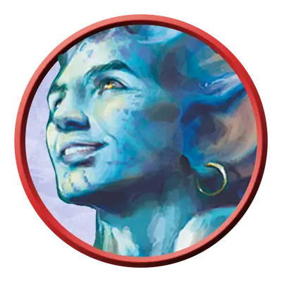

Мерфолк ваятель волн
Merfolk Wavebender
Средний Элементаль, Нейтральный

Класс Защиты 14 Инициатива +4 (14)
Хиты 97 (15к8 + 30)
Скорость 10 футов, Плавания 40 футов
| мод | спас | ||
|---|---|---|---|
| СИЛ | 10 | +0 | +0 |
| ЛОВ | 18 | +4 | +7 |
| ТЕЛ | 14 | +2 | +5 |
| мод | спас | ||
|---|---|---|---|
| ИНТ | 13 | +1 | +1 |
| МДР | 19 | +4 | +7 |
| ХАР | 15 | +2 | +5 |
Сопротивление урону Холод
Чувства пассивное Восприятие 17
Языки Общий, Первичный (Акван)
Опасность 6 (2 300 опыта; БВ +3)
Особенности
Амфибия. Мерфолк может дышать как воздухом, так и под водой.
Действия
Мультиатака. Мерфолк совершает две атаки Струёй воды.
Струя воды. Бросок рукопашной или дальнобойной атаки: +7, досягаемость 5 фт. или дистанция 60 фт. Попадание: 20 (3к10 + 4) урона Холодом. Если цель Большого размера или меньше, она становится Опрокинутой.
Сотворение заклинаний. Мерфолк ваятель волн сотворяет одно из следующих заклинаний, не нуждаясь в Материальных компонентах (заклинательная характеристика — Мудрость, Сл спасброска заклинаний 15):
Неограниченно: Свет, Элементализм
1/день каждое: Власть над водами, Сотворение или уничтожение воды
Реакции
Водяное возмездие. Условие: Видимый мерфолком враг входит в пространство в 5 футах от мерфолка. Эффект — Спасбросок Силы: Сл 15, вызвавшее ответ существо. Провал: 14 (4к6) урона Холодом. Если цель Большого размера или меньше, всплеск воды отталкивает её от мерфолка на расстояние до 30 футов по прямой.
Бонус мастерства +3
Среда обитания Прибрежье, Под водой
Сокровища Личные
Мерфолки
Под толщей волн обитают мерфолки — загадочные создания, в чьём облике сплелись черты людей и морских существ. Одни из них с любопытством взирают на обитателей суши, другие же встречают пришельцев с глухим недоверием.
Ваятели волн прибегают к магии, дабы повелевать водой, бурями и морскими тварями, обращая их силу себе во благо.